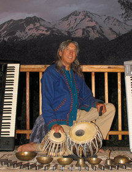
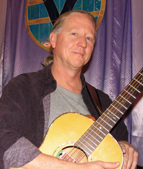
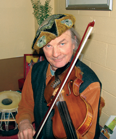

2 Loka Samasta
3 Bhupali Opening
4 Bhupali Finale
5 Blarney Pilgrim
6 Roosters in the Henhouse
7 Khotan
8 Autumn Rains
9 Ye Dharma
10 Harmonica Sunset – Starlight
5:07
10:14
12:04
4:09
2:51
4:21
5:15
3:49
5:55

Harmonica Sunset - Twilight: soprano sax.
Roosters in the Henhouse: soprano sax.
Khotan: soprano sax.
Ye Dharma: soprano sax.
Blarney Pilgrim: pennywhistle.

Harmonica Sunset - Twilight;
Loka Samasta;
Blarney Pilgrim;
Autumn Rains;
Ye Dharma;
Harmonica Sunset Starlight;
Autumn Rains;
Harmonica Sunset Starlight;

Bhupali Opening;
Bhupali Finale;
Loka Samasta: harmony vocals.
Autumn Rains: vocals.
Ye Dharma: harmony vocals.

Loka Samasta: vocals.
Ye Dharma: vocals.

Loka Samasta: background vocals.

Khotan: digeridoo.
MP3 Downloads:
Rooster in the Henhouse Anton Mizerak: Harmonica; Richard Hardy: soprano sax; Daniel Paul: tabla and dunbek; Patrick Pape: digeridoo.
Bhupali Opening Anton Mizerak: harmonica, keyboards & Tibetan bowls; Olof Söderbäck: 13 stringed viola
Bhupali Opening
Harmonica Sunset - Starlight Anton Mizerak: harmonica, keyboards & Tibetan bowls; Manose: bamboo flute; Michael Mandrell: guitar.
Ye Dharma Anton Mizerak: harmonica, keyboards, percussion & vocals; Michael Mandrell: guitar; Richard Hardy: soprano sax; Craig Zwiok: cymbals; Theresa May: vocals; Natalie Gougeon: vocals.
Home Page Harmonica Sunset Page Ordering info Anton's CDs Anton's Bio Michael Mandrell Bio Richard Hardy Bio Olof Söderbäck Bio Manose bio & CDs Tour Schedule Radio Promo